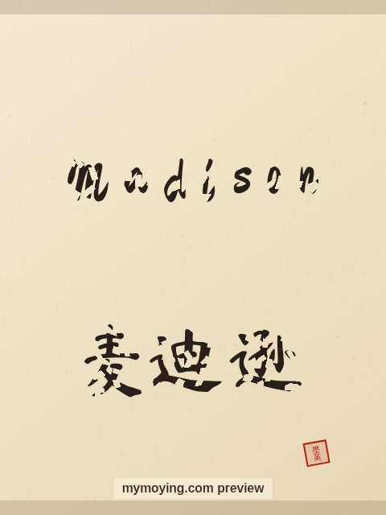

Madison in Chinese Calligraphy
Here is Madison in Chinese calligraphy — the English letters drawn in brush style, plus the Chinese form 麦迪逊.

Sample. “Madison” in the Regular (楷书) brush style with the Chinese name 麦迪逊 (Mài dí xùn). The paid file removes the watermark.
The Chinese characters for Madison
As a transliteration, Madison is usually written 麦迪逊 (Mài dí xùn). Each character is listed below with its own dictionary meaning — the name is chosen by sound, not by meaning, and Moying does not translate names. Please have a person review the characters before any permanent use such as a tattoo.
Origin and meaning
The name Madison has English roots and means “son of Matthew (a surname)”.
About the name Madison
A surname of a US president that became a top girls' name after the film Splash.
As a gift or a tattoo
If you are choosing a name for a print or a tattoo, Madison carries the meaning “son of Matthew (a surname)” and looks striking in brush strokes.
Open Madison in the generatorFree watermarked preview. $1.99 once for a clean high-resolution download of this name in every style and setting. No subscription. Digital product, delivered instantly; see Terms.